Książki
Powieści, opowiadania, poezja i historie dla najmłodszych. Odkrywaj twórczość Wojciecha Żukrowskiego chronologicznie lub znajdź konkretny tytuł.
Wybrane książki
Na początek lektury
Kamienne tablice
Delhi, rok 1956. Węgierski dyplomata Istvan Terey zakochuje się w australijskiej lekarce Margit. Uczucie zderza się z rodzinnymi zobowiązaniami i trudnymi wyborami, a codzienność bohaterów przenikają barwy i zapachy Indii.

Porwanie w Tiutiurlistanie
Kogut Marcin Pypeć, kot Mysibrat i lisica Chytraska wyruszają na pomoc porwanej królewnie Wiolince. Ich przyjaźń i pomysłowość wystawione zostają na próbę w baśniowym świecie dwóch sąsiadujących królestw.

Z kraju milczenia
Historie żołnierzy i cywilów układają się w obraz wojny i okupacji. Opowiadania powstawały w latach 1939–1945 i wyrastają z doświadczeń autora.
Pełna bibliografia
W porządku chronologicznymRdza
Konspiracyjny tom wierszy. W 1948 wznowiony jako „Wiersze”.
Bal w agreście
Wiersze dla dzieci z ilustracjami autora.
Porwanie w Tiutiurlistanie
Kogut Marcin Pypeć, kot Mysibrat i lisica Chytraska wyruszają na pomoc porwanej królewnie Wiolince. Ich przyjaźń i pomysłowość wystawione zostają na próbę w baśniowym świecie dwóch sąsiadujących królestw.
Z kraju milczenia
Historie żołnierzy i cywilów układają się w obraz wojny i okupacji. Opowiadania powstawały w latach 1939–1945 i wyrastają z doświadczeń autora.
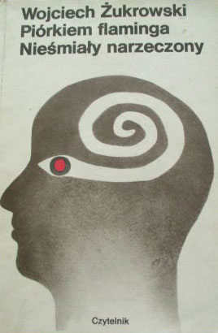
Piórkiem flaminga czyli opowiadania przewrotne
Humor, groteska i fantastyka odwracają zwykły porządek świata. Zbiór pokazuje przewrotną stronę pisarstwa Żukrowskiego.
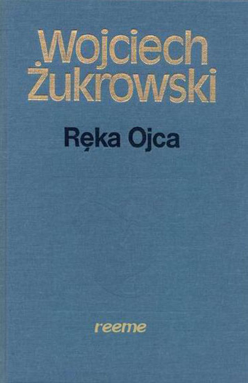
Ręka ojca
Styczeń 1945. Przypadkowych ludzi łączy pobyt w starym zamku.
Wiersze
Powojenne wydanie konspiracyjnego tomu „Rdza”.
Mądre zioła
Powieść o badaniach nad leczniczymi roślinami w powojennym Wrocławiu.
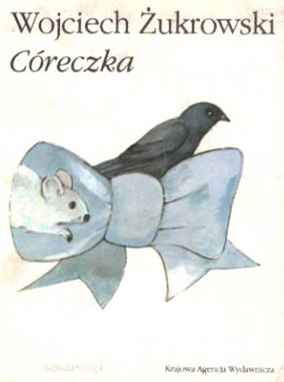
Córeczka
Dzieci i zwierzęta w ośmiu opowiadaniach.
Szabla Gabrysia
Historyczne opowiadanie dla młodzieży.
Słoneczne lato
Krótkie opowiadania o lesie, drzewach i drewnie.
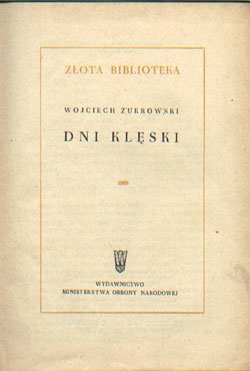
Dni klęski
Kampania wrześniowa, żołnierskie doświadczenia i bitwa pod Różanem.
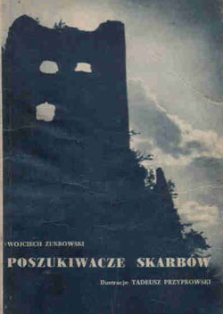
Poszukiwacze skarbów
Powieść dla młodzieży, wydana przez Naszą Księgarnię.
W kamieniołomie i inne opowiadania
Zbiór zawierający m.in. „Noce Ariadny”.
Dom bez ścian. Dziennik pobytu w Wietnamie
Wędrówka przez wojenny Wietnam z przełomu 1953 i 1954 roku.
Ognisko w dżungli. Opowieści i baśnie z Wietnamu
Wietnamskie opowieści i baśnie.
Desant na Kamiennej Wyspie
Epizody walk o chińskie wyspy w 1955 roku. Współautor: Janusz Przymanowski.
Wybór opowiadań
Wybór krótkiej prozy autora.
Mój przyjaciel słoń
Książka dla dzieci wydana przez Naszą Księgarnię.
Kantata
Wczesne opowiadania, powstałe w latach 1936–1945.
Opowieści z dreszczykiem
Antologia opracowana z Tadeuszem Aleksandrem Malanowskim.
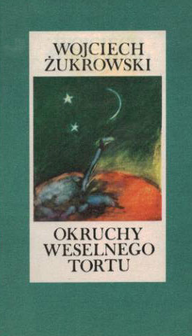
Okruchy weselnego tortu
Poetycki powrót do dzieciństwa i zapamiętanego świata rodzinnego.
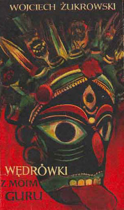
Wędrówki z moim Guru
Opowieści indyjskie: codzienność, niezwykłe spotkania i humor.
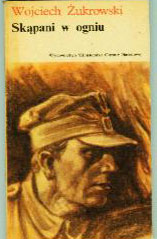
Skąpani w ogniu
Losy dowódcy kompanii samochodowej w Polsce roku 1945.
W królestwie miliona słoni
Zapis podróży do Laosu w 1961 roku.
Nieśmiały narzeczony
Zbiór opowiadań, później wydawany wspólnie z „Piórkiem flaminga”.
Opowieści z Dalekiego Wschodu
Relacje i reportaże z Wietnamu, Laosu oraz Indii.
Kamienne tablice
Delhi, rok 1956. Węgierski dyplomata Istvan Terey zakochuje się w australijskiej lekarce Margit. Uczucie zderza się z rodzinnymi zobowiązaniami i trudnymi wyborami, a codzienność bohaterów przenikają barwy i zapachy Indii.
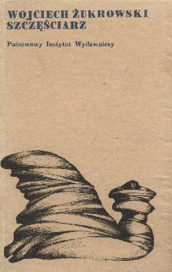
Szczęściarz
Zbiór opowiadań z 1967 roku.
Noce Ariadny
Tom łączy „Noce Ariadny” i „Tyrana, czyli portret trumienny”.
Lotna
Historia obecna w tomie „Z kraju milczenia”; pierwodruk w „Twórczości” w 1945 roku.

Kierunek Berlin
Zbiór nowel filmowych.
Wybór opowiadań
Wybór krótkiej prozy autora.
Karambole
Felietony o książkach i pisarzach z „Nowych Książek”, 1967–1970.
W głębi zwierciadła. Gawędy o pisarzach i książkach
Gawędy poświęcone pisarzom i lekturom.
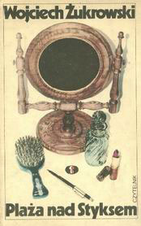
Plaża nad Styksem
Cztery wiosenne dni w Rzymie podczas zjazdu pisarzy w 1968 roku.
Ostrożnie ze Złotym Lisem
Zbiór opowieści obejmujący m.in. „Tyrana” i utwór tytułowy.
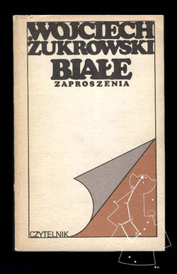
Białe zaproszenie i inne opowiadania
Zbiór krótkiej prozy wydany w 1979 roku.
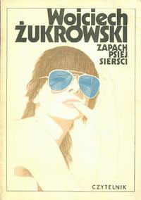
Zapach psiej sierści
Powieść z 1980 roku, przeniesiona na ekran przez Jana Batorego. Filmowa adaptacja ukazała się w 1982 roku.
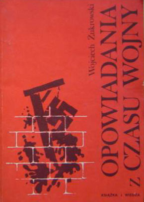
Opowiadania z czasu wojny
Wojenna proza, m.in. „Lotna”, „Kola” i „W kamieniołomie”.
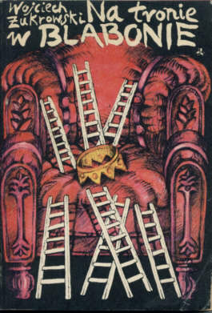
Na tronie w Blabonie
Powrót do baśniowego świata „Porwania w Tiutiurlistanie”. Druga część rozwija losy bohaterów znanych z wcześniejszej książki.
Kamienny pies. Baśnie wietnamskie
Zbiór baśni wietnamskich.
Rozmowy o książkach
Książka poświęcona lekturom, opublikowana w 1989 roku.
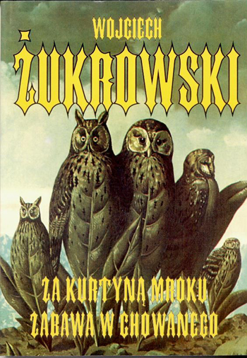
Za kurtyną mroku. Zabawa w chowanego
Tom prozy łączący opowiadania z osobistą pamięcią. Część „Zabawa w chowanego” poświęcona jest wspomnieniom o zmarłych pisarzach.
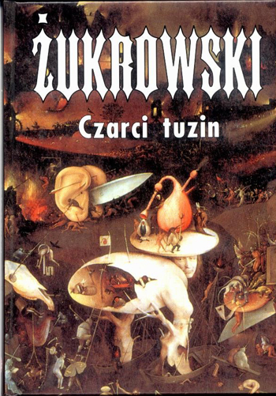
Czarci tuzin
Trzynaście mrocznych historii, w których zwyczajność ustępuje miejsca lękowi i niesamowitości. Tom ukazał się pod koniec życia autora.
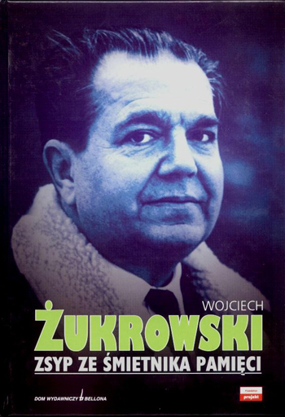
Zsyp ze śmietnika pamięci
Niedokończone wspomnienia, opublikowane pośmiertnie w 2002 roku.
Nie znaleziono książek. Spróbuj innego tytułu lub roku.